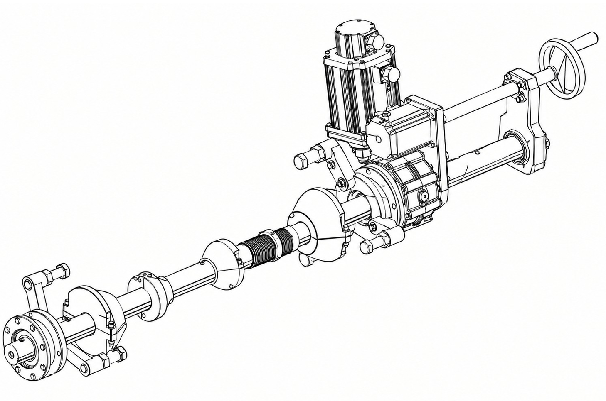
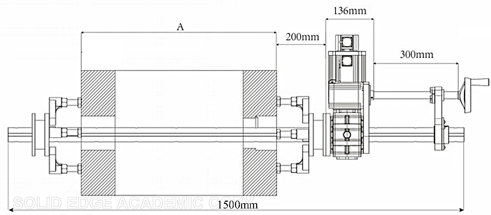
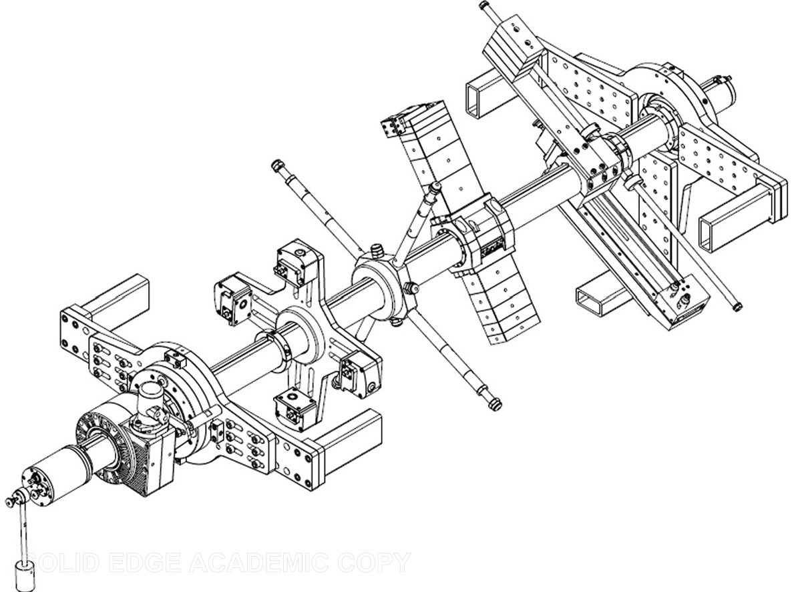
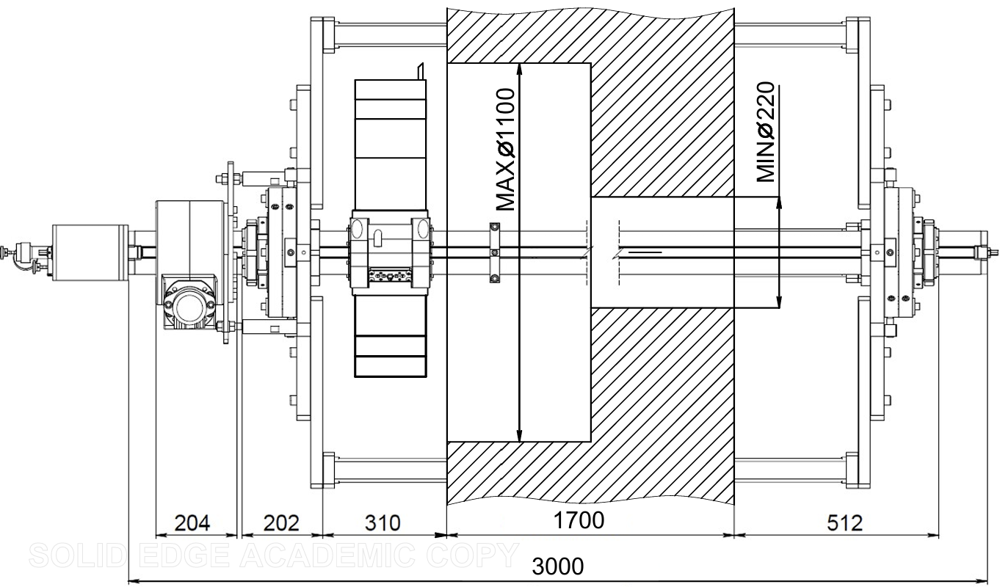

Mobilny serwis - Dojeżdżamy bezpośrednio do Ciebie.
Oferujemy mobilną obróbkę otworów z wykorzystaniem wytaczarki o zakresie obróbczym od Ø30 do Ø300 mm, wyposażonej dodatkowo w funkcję napawania.
Kompaktowa i lekka konstrukcja urządzenia umożliwia wykonywanie precyzyjnej obróbki również w trudno dostępnych, ciasnych i wymagających przestrzeniach.
Dysponujemy szerokim zakresem oprzyrządowania, a także doświadczeniem w projektowaniu i wykonywaniu mocowań oraz elementów pomocniczych dostosowanych do indywidualnych wymagań konkretnego zlecenia.


Oferujemy mobilną obróbkę otworów z wykorzystaniem wytaczarki TDG110, umożliwiającej obróbkę w zakresie średnic od Ø220 do Ø1100 mm.
Maszyna wyposażona jest we wrzeciono główne w postaci wału o średnicy Ø110 mm i długości 3000 mm. Zastosowanie posuwu realizowanego przez wrzeciono zapewnia wysoką sztywność układu, co przekłada się na stabilność procesu obróbki oraz możliwość uzyskania wysokiej dokładności wymiarowej i geometrycznej.
Specjalnie dobrane oprzyrządowanie umożliwia wykonywanie obróbki zarówno wzdłuż osi wrzeciona, jak i w kierunku prostopadłym.

